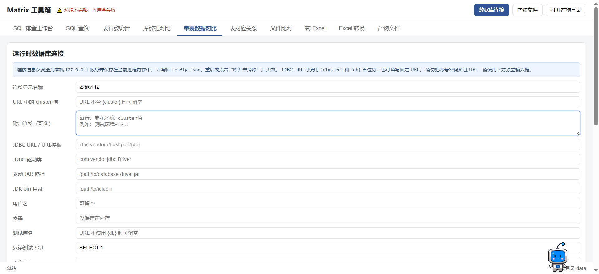

项目背景
从真实的重复工作出发。
日常数据排查需要在数据库客户端、SQL 脚本和 Excel 文件之间反复切换。表数据量统计、结果核对和格式转换步骤重复，问题定位也依赖人工经验。
项目目标不是重做一个数据库客户端，而是把高频排查流程放到同一个本地页面中，降低切换和重复录入成本。
实习项目 · 本地数据工作台
面向实习工作中的数据库查询、SQL 排查和 Excel 核对需求，将分散的重复操作整合为一个本地 Web 工作台，并加入基于代码证据的 AI 辅助分析。
真实运行界面
截图展示运行时数据库连接页面。公开版本仅保留通用字段与占位配置，不包含真实地址、账号或密码。

项目背景
日常数据排查需要在数据库客户端、SQL 脚本和 Excel 文件之间反复切换。表数据量统计、结果核对和格式转换步骤重复，问题定位也依赖人工经验。
项目目标不是重做一个数据库客户端，而是把高频排查流程放到同一个本地页面中，降低切换和重复录入成本。
个人职责
项目使用 Qoder 辅助生成和修改部分代码。个人工作重点是整理实际需求、设计操作流程、验证并修改生成代码、整合模块、处理运行问题，以及完成安全限制和公开版本脱敏。
已实现功能
以下能力均能在公开代码中找到对应模块；依赖外部环境的功能会明确标注运行条件。
运行时填写 JDBC URL、驱动类和驱动 JAR；执行只读 SQL，并读取表清单、元数据行数或精确 COUNT。
拆分多语句和长 SQL，提取表、JOIN、过滤条件与字段差异，输出可以继续验证的静态证据。
在本地证据基础上调用兼容模型接口，区分直接证据、可能影响和待验证假设；生成内容不会自动执行。
比较库表清单、表行数、字段和按主键抽样的明细数据，并支持维护不同环境之间的表名映射。
按主键逐格比较文件，定位新增、缺失和字段不一致；重复键数据在组内进行匹配，减少误报。
支持 Excel 转 INSERT SQL、PDF、Word，以及结构化文本转 Excel；图片 OCR 当前依赖 macOS Vision。
技术实现
项目保持本地优先：浏览器只访问 127.0.0.1，Flask 接收操作请求，再调用数据库、SQL、Excel 或 AI 模块。外部模型是可选增强，不影响本地规则能力。
关键实现
数据库和 AI 配置通过前端运行时填写，只保存在当前进程内存。账号、密码与 SQL 通过标准输入传给 Java 查询器，避免进入命令行参数。
先由本地解析器提取确定信息，再让模型解释语义影响。验证 SQL 仍需经过只读检查，且必须由使用者确认执行。
Excel / CSV 比较支持按主键分组，并在重复键组内进行匹配，而不是简单按文件行号逐行比较。
仓库包含 Windows 一键启动、依赖清单和 14 项自动化测试，并提供空白配置示例和明确的已知边界。
项目总结
项目将多项分散操作整合到一个本地工作台，并完成运行验证、安全限制、依赖整理和公开版本脱敏。没有真实统计的数据，不在页面中编造效率提升比例。
在 GitHub 查看源码与运行说明 ↗